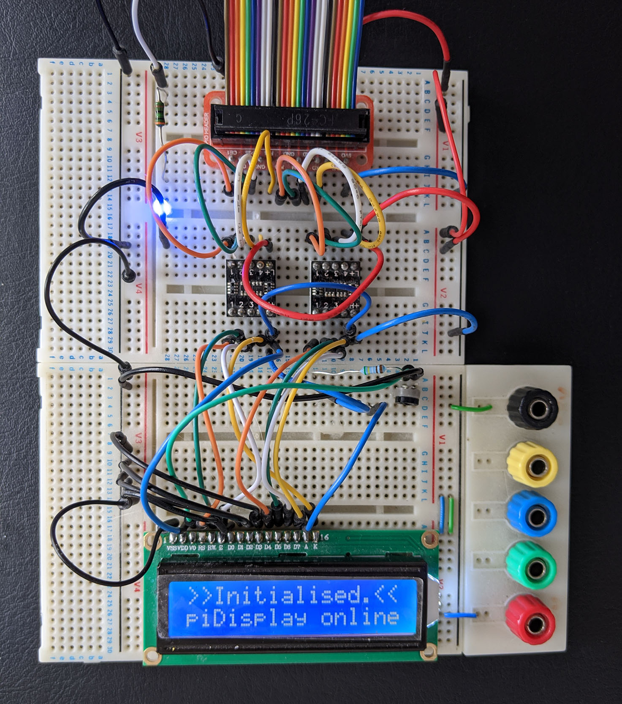
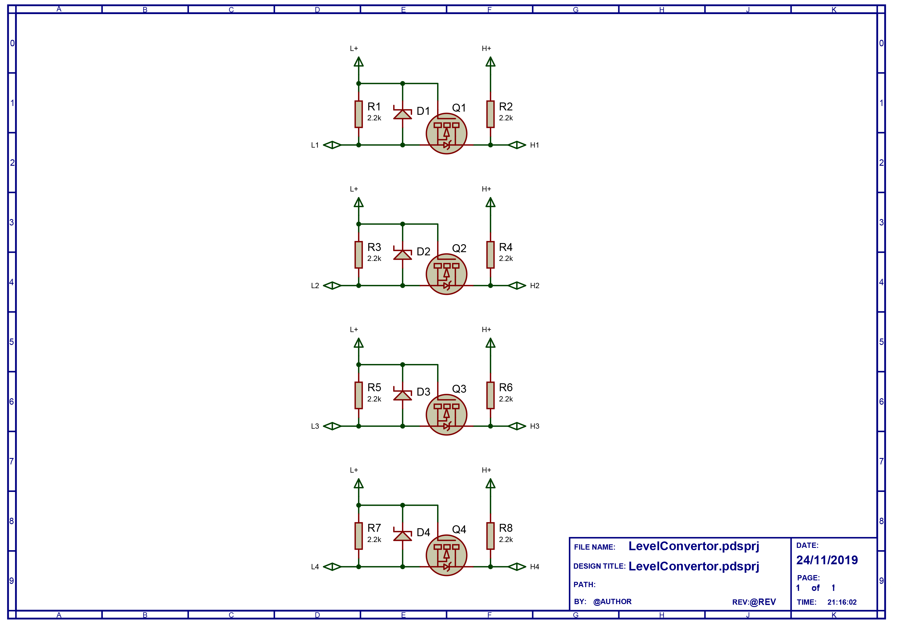

A HD44780 LCD controller based notification for minecraft servers (Java).
piDisplay is a 16x2 character LCD based minecraft server notification system. You will need a Minecraft server running this plugin and build the hardware decsribed in this guide.
Current prototype
If you are not interested in playing with the code then just download the latest .jar file from the releases link.
After downloading, copy it to your minecraft server plugins folder.
Below here is placeholder from another plugin to be ignored.
A heading to be used later
If you want to play with the source code then download the whole project from the links on the left. It was built in Eclipse using the Maven framework.
The plugin has 3 commands that can control events being displayed.
Breadboard
This shows the prototype I used for testing
Schematic
The overall schematic, I used a 5V LCD which required level convertors for the 3.3V GPIO on the Pi. My life would have been easier if I'd just picked a 3.3V LCD in the first place. If you do this then you can just omit the level convertors.
Note that the resistor values were tuned to the actual LEDs/LCD that I had, YMMV.
Level convertor
These are the FDC6301N based level convertors that I used. At the time writing something like this should do the trick
This is me getting back into enjoying fiddling with electronics after 20 years of doing it for the day job and falling out of love with it. Now that the bills don't depend on it (note I've just changed career, I haven't "made it" or won the lottery"), I'm doing it for fun again. Any suggestions for improvements to the code are welcome, contact me on GitHub. It's been fun perhaps with the exception of my woeful attempts to understand Git merges!
{kind=link}